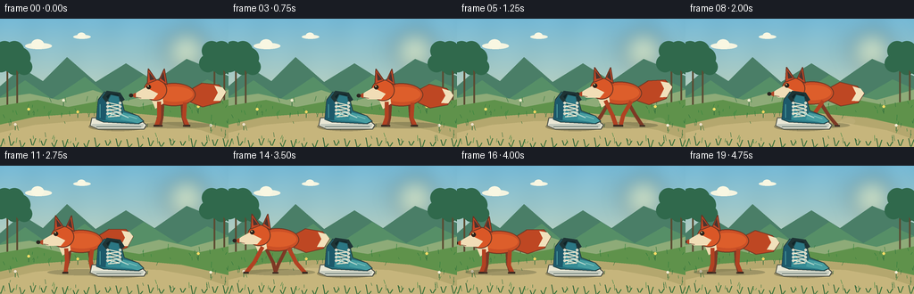
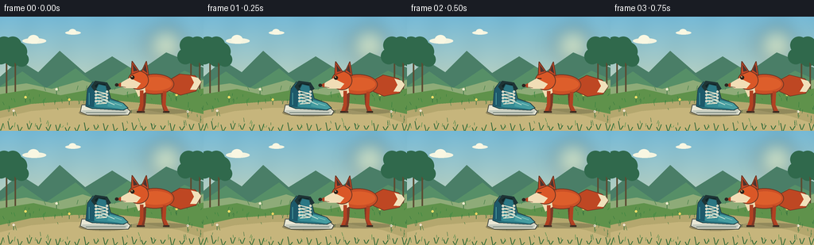

CODING AGENTS AS PIXEL WORLD MODELS
traex/GPT-5.6-Sol · dynamic_spatial_relationship_0029
点击播放 · 原生 RGB 像素
逐轮保存的候选
回放视频、检查图与代码变化。
每份候选均可单独播放。实际图片检查记录在下方工具轨迹中。
候选 01播放与检查图
点击播放 · 原生 RGB 像素


展开代码变化
--- 上一保存版本
+++ 本次保存版本
@@ -0,0 +1,213 @@
+from pathlib import Path
+import math, json
+import numpy as np
+from PIL import Image, ImageDraw, ImageFilter
+import artifact_io
+
+ROOT = Path(__file__).resolve().parent
+SPEC = json.loads((ROOT / 'task_spec.json').read_text())
+W, H, N = SPEC['width'], SPEC['height'], SPEC['frames']
+SS = 4
+w, h = W*SS, H*SS
+rng = np.random.default_rng(29)
+
+def sc(v): return int(round(v*SS))
+def box(x0,y0,x1,y1): return (sc(x0),sc(y0),sc(x1),sc(y1))
+def pts(seq): return [(sc(x),sc(y)) for x,y in seq]
+
+def ellipse(d, b, fill, outline=None, width=1):
+ d.ellipse(box(*b), fill=fill, outline=outline, width=sc(width) if outline else 1)
+def poly(d, p, fill, outline=None, width=1):
+ d.polygon(pts(p), fill=fill)
+ if outline: d.line(pts(p+[p[0]]), fill=outline, width=sc(width), joint='curve')
+def line(d, p, fill, width=1, joint='curve'):
+ d.line(pts(p), fill=fill, width=sc(width), joint=joint)
+def rr(d, b, radius, fill, outline=None, width=1):
+ d.rounded_rectangle(box(*b), radius=sc(radius), fill=fill, outline=outline, width=sc(width))
+
+# --- fixed illustrated environment ---
+def make_background():
+ yy = np.linspace(0,1,h)[:,None,None]
+ top = np.array([116,184,213], dtype=float)
+ bottom = np.array([235,225,174], dtype=float)
+ arr = np.tile(top*(1-yy)+bottom*yy, (1,w,1))
+ # very subtle paper-like atmosphere
+ X,Y=np.meshgrid(np.arange(w),np.arange(h))
+ grain=(1.2*np.sin(X/29.0)+0.8*np.sin((X+Y)/47.0))[...,None]
+ arr=np.clip(arr+grain,0,255).astype(np.uint8)
+ im=Image.fromarray(arr,'RGB').convert('RGBA')
+ # diffuse sun
+ glow=Image.new('RGBA',(w,h),(0,0,0,0)); gd=ImageDraw.Draw(glow)
+ ellipse(gd,(183,10,235,62),(255,238,164,55)); ellipse(gd,(197,23,221,47),(255,246,194,150))
+ glow=glow.filter(ImageFilter.GaussianBlur(sc(10))); im=Image.alpha_composite(im,glow)
+ d=ImageDraw.Draw(im)
+ # clouds
+ for x,y,s in [(28,27,1),(82,18,.65)]:
+ ellipse(d,(x,y,x+30*s,y+7*s),(244,244,224,110))
+ ellipse(d,(x+7*s,y-4*s,x+21*s,y+7*s),(249,247,226,120))
+ # far layered hills
+ poly(d,[(-5,80),(24,55),(48,70),(75,43),(107,71),(141,50),(173,70),(209,45),(265,68),(265,108),(-5,108)],(74,126,103,255))
+ poly(d,[(-5,91),(28,69),(58,90),(95,65),(123,88),(161,63),(199,87),(232,68),(265,83),(265,112),(-5,112)],(86,143,103,255))
+ # distant mist strip
+ poly(d,[(-2,89),(33,84),(65,91),(104,80),(141,92),(178,83),(214,91),(258,79),(260,108),(-2,108)],(142,171,120,255))
+ # distant tree trunks and crowns
+ for x in [8,19,240,251]:
+ line(d,[(x,51),(x,103)],(91,76,50,255),2)
+ for ox,oy,r in [(-7,4,10),(3,-2,12),(8,8,9),(-3,-10,11)]:
+ ellipse(d,(x+ox-r,y if False else 46+oy-r,x+ox+r,46+oy+r),(48,105,76,255))
+ # meadow and path
+ poly(d,[(-2,98),(42,91),(76,99),(113,92),(156,99),(193,91),(223,97),(258,90),(258,146),(-2,146)],(95,146,75,255))
+ poly(d,[(-10,121),(39,110),(92,106),(148,106),(203,111),(266,125),(266,146),(-10,146)],(180,167,110,255))
+ poly(d,[(-5,129),(39,119),(85,115),(132,115),(180,117),(225,125),(261,137),(261,146),(-5,146)],(198,181,124,255))
+ # grass clumps and small wildflowers
+ for i in range(120):
+ x=float(rng.uniform(0,256)); y=float(rng.uniform(92,141))
+ # avoid excessive detail on central path
+ if 112 < y < 132 and 35 < x < 225 and rng.random()<0.72: continue
+ length=float(rng.uniform(2.0,6.5))
+ col=(50,108+int(rng.integers(0,28)),61,220)
+ line(d,[(x,y),(x+rng.uniform(-2,2),y-length)],col,.55)
+ for x,y,c in [(32,108,(255,225,105,255)),(71,98,(239,238,208,255)),(222,105,(250,220,102,255)),(17,125,(236,224,202,255)),(236,126,(244,238,213,255)),(87,111,(247,213,98,255))]:
+ line(d,[(x,y),(x,y-6)],(52,111,61,255),.7)
+ ellipse(d,(x-1.5,y-8,x+1.5,y-5),c)
+ # foreground vignetting tufts
+ for x in range(0,257,12):
+ yy0=145-rng.uniform(0,3)
+ line(d,[(x,yy0),(x-2,yy0-rng.uniform(4,11))],(46,100,55,230),1)
+ line(d,[(x+1,yy0),(x+4,yy0-rng.uniform(3,9))],(52,112,57,220),1)
+ return im
+
+BG=make_background()
+
+def draw_dust(layer, cx, frame, speed):
+ if speed < 3 or frame < 5 or frame > 15: return
+ d=ImageDraw.Draw(layer)
+ # puffs remain just behind the running fox
+ for j in range(3):
+ px=cx+31+j*7 + 2*math.sin(frame+j)
+ py=119-j*2
+ alpha=max(0,70-j*17)
+ ellipse(d,(px-5-j,py-3-j*.5,px+5+j,py+3+j*.5),(221,204,157,alpha))
+
+def draw_fox(layer, cx, frame, moving):
+ d=ImageDraw.Draw(layer)
+ ground=120
+ # idle breathing/bob, and running bound
+ if moving:
+ bob=-2.0*abs(math.sin(frame*math.pi*.54))
+ phase=frame*1.72
+ else:
+ bob=.65*math.sin(frame*.9)
+ phase=0
+ cy=ground+bob
+ # soft contact shadow
+ ellipse(d,(cx-35,ground-4,cx+45,ground+3),(54,59,39,70))
+ # tail, behind body; lively follow-through
+ wag = (4.8*math.sin(frame*.74) if not moving else 5.5*math.sin(frame*1.1))
+ tail_pts=[(cx+15,cy-37),(cx+34,cy-48+wag*.25),(cx+53,cy-46+wag),(cx+61,cy-38+wag),
+ (cx+54,cy-26+wag*.65),(cx+35,cy-21+wag*.25),(cx+17,cy-28)]
+ poly(d,tail_pts,(190,71,35,255), (113,57,37,255),1)
+ # creamy tail tip
+ tip=[(cx+48,cy-45+wag*.78),(cx+57,cy-43+wag*.92),(cx+61,cy-38+wag),
+ (cx+55,cy-28+wag*.7),(cx+47,cy-28+wag*.55),(cx+52,cy-37+wag*.75)]
+ poly(d,tip,(241,225,187,255))
+ # rear legs first (far side)
+ legfar=(125,57,37,255)
+ if moving:
+ a=math.sin(phase)
+ # far pair opposite phase
+ front_knee=(cx-11-10*a,cy-14+5*abs(a)); front_paw=(cx-14-17*a,ground)
+ back_knee=(cx+13+10*a,cy-13+5*abs(a)); back_paw=(cx+15+17*a,ground)
+ else:
+ front_knee=(cx-11,cy-10); front_paw=(cx-13,ground)
+ back_knee=(cx+13,cy-10); back_paw=(cx+16,ground)
+ line(d,[(cx-10,cy-25),front_knee,front_paw],legfar,4)
+ line(d,[(cx+12,cy-24),back_knee,back_paw],legfar,4)
+ line(d,[(front_paw[0]-3,ground),(front_paw[0]+3,ground)],(67,48,37,255),2)
+ line(d,[(back_paw[0]-3,ground),(back_paw[0]+3,ground)],(67,48,37,255),2)
+ # body with subtle dark dorsal overlay
+ ellipse(d,(cx-22,cy-48,cx+27,cy-22),(203,80,38,255),(109,55,36,255),1)
+ ellipse(d,(cx-17,cy-44,cx+24,cy-27),(221,94,43,255))
+ # pale chest crescent
+ poly(d,[(cx-18,cy-39),(cx-23,cy-31),(cx-18,cy-19),(cx-9,cy-25),(cx-11,cy-38)],(239,220,178,255))
+ # near legs
+ if moving:
+ a=math.sin(phase+math.pi)
+ fk=(cx-14-11*a,cy-13+4*abs(a)); fp=(cx-16-19*a,ground)
+ bk=(cx+14+11*a,cy-13+4*abs(a)); bp=(cx+17+19*a,ground)
+ else:
+ fk=(cx-14,cy-9); fp=(cx-17,ground)
+ bk=(cx+14,cy-9); bp=(cx+18,ground)
+ line(d,[(cx-14,cy-27),fk,fp],(177,65,34,255),4.5)
+ line(d,[(cx+15,cy-26),bk,bp],(177,65,34,255),4.5)
+ line(d,[(fp[0]-3,ground),(fp[0]+3,ground)],(58,43,34,255),2.2)
+ line(d,[(bp[0]-3,ground),(bp[0]+3,ground)],(58,43,34,255),2.2)
+ # neck and head, fox faces left
+ ellipse(d,(cx-31,cy-52,cx-5,cy-28),(218,87,39,255),(105,53,36,255),1)
+ # tall ears
+ poly(d,[(cx-27,cy-47),(cx-26,cy-64),(cx-17,cy-51)],(197,71,37,255),(105,53,36,255),1)
+ poly(d,[(cx-14,cy-51),(cx-8,cy-64),(cx-5,cy-46)],(199,72,37,255),(105,53,36,255),1)
+ poly(d,[(cx-24,cy-51),(cx-25,cy-60),(cx-19,cy-52)],(75,53,47,255))
+ poly(d,[(cx-12,cy-53),(cx-9,cy-60),(cx-7,cy-49)],(75,53,47,255))
+ # white cheek and pointed muzzle
+ poly(d,[(cx-29,cy-43),(cx-38,cy-38),(cx-43,cy-34),(cx-35,cy-30),(cx-20,cy-30),(cx-15,cy-36)],(241,221,182,255))
+ poly(d,[(cx-40,cy-37),(cx-46,cy-34),(cx-40,cy-31)],(177,70,39,255))
+ ellipse(d,(cx-47.5,cy-36,cx-43,cy-32),(42,38,33,255))
+ # eye / blink once while waiting
+ blink=(frame==2 or frame==18)
+ if blink:
+ line(d,[(cx-28,cy-43),(cx-23,cy-43)],(42,34,28,255),1)
+ else:
+ ellipse(d,(cx-28,cy-46,cx-23,cy-41),(44,35,27,255))
+ ellipse(d,(cx-26.8,cy-45.3,cx-25.4,cy-43.8),(247,226,163,255))
+ # tiny smile line
+ line(d,[(cx-39,cy-32),(cx-34,cy-31)],(103,55,40,220),.7)
+
+def draw_shoe(layer):
+ d=ImageDraw.Draw(layer)
+ # fixed shadow emphasizes that only fox moves
+ ellipse(d,(99,116,165,126),(51,52,38,88))
+ # white layered outsole
+ poly(d,[(103,111),(119,111),(131,114),(158,114),(164,119),(161,124),(110,124),(101,120)],(233,231,213,255),(72,77,69,255),1)
+ poly(d,[(104,118),(161,118),(160,122),(108,122),(102,119)],(196,202,190,255))
+ line(d,[(108,121),(158,121)],(112,126,119,255),1)
+ # teal upper: heel collar + toe vamp
+ poly(d,[(108,113),(110,91),(117,82),(134,84),(139,103),(155,109),(161,115),(155,118),(116,116)],(39,113,126,255),(38,62,63,255),1)
+ # quarter panel and toe highlight
+ poly(d,[(115,112),(119,90),(132,89),(137,105),(151,109),(157,114),(152,116),(123,114)],(53,139,148,255))
+ poly(d,[(137,105),(154,109),(160,115),(154,117),(135,113)],(70,157,160,255))
+ # heel reinforcement
+ poly(d,[(108,113),(110,92),(117,84),(121,89),(118,114)],(29,89,106,255))
+ # dark opening / padded collar
+ poly(d,[(115,88),(120,81),(134,83),(139,91),(132,95),(119,93)],(31,52,53,255),(30,54,55,255),1)
+ poly(d,[(119,87),(123,84),(132,85),(135,89),(130,91),(121,90)],(16,36,39,255))
+ # tongue
+ poly(d,[(121,91),(124,85),(133,87),(137,106),(128,108)],(43,119,132,255),(32,73,78,255),1)
+ # lace eyelets and laces
+ for j in range(4):
+ y=94+j*4
+ ellipse(d,(119,y-1,122,y+2),(215,217,200,255))
+ ellipse(d,(133,y-1,136,y+2),(215,217,200,255))
+ line(d,[(121,y),(134,y+3),(121,y+4)],(242,233,207,255),1.25)
+ # side logo/seam and toe shine
+ line(d,[(123,109),(130,105),(144,111)],(176,214,204,255),1.2)
+ line(d,[(144,109),(153,112)],(130,197,191,255),1)
+ line(d,[(112,96),(112,111)],(89,174,172,255),.8)
+
+# hand-tuned easing: wait on right, sprint through, settle on left
+positions=[192,192,192,191,188,180,169,155,139,122,105,88,73,61,52,47,44,44,44,44]
+frames=[]
+for i,cx in enumerate(positions):
+ im=BG.copy()
+ dyn=Image.new('RGBA',(w,h),(0,0,0,0))
+ speed=0 if i==0 else abs(positions[i]-positions[i-1])
+ draw_dust(dyn,cx,i,speed)
+ moving=(4 <= i <= 15)
+ draw_fox(dyn,cx,i,moving)
+ # The fox passes behind the stationary shoe, keeping both actors legible.
+ draw_shoe(dyn)
+ im=Image.alpha_composite(im,dyn)
+ im=im.convert('RGB').resize((W,H),Image.Resampling.LANCZOS)
+ frames.append(np.asarray(im,dtype=np.uint8))
+frames=np.stack(frames)
+artifact_io.save(frames, ROOT)
可观测工具轨迹
实际执行的命令与返回图片。
命令 1exit 0
/bin/bash -lc "cat prompt.txt && printf '\\n---RULES---\\n' && cat GENERATION_RULES.md && printf '\\n---SPEC---\\n' && cat task_spec.json"
命令 2exit 0
/bin/bash -lc "find . -maxdepth 2 -type f -printf '%p\\n' | sort"
命令 3exit 0
/bin/bash -lc 'cat artifact_io.py'
命令 4exit 0
/bin/bash -lc "cat > generate.py <<'PY'
from pathlib import Path
import math, json
import numpy as np
from PIL import Image, ImageDraw, ImageFilter
import artifact_io
ROOT = Path(__file__).resolve().parent
SPEC = json.loads((ROOT / 'task_spec.json').read_text())
W, H, N = SPEC['width'], SPEC['height'], SPEC['frames']
SS = 4
w, h = W*SS, H*SS
rng = np.random.default_rng(29)
def sc(v): return int(round(v*SS))
def box(x0,y0,x1,y1): return (sc(x0),sc(y0),sc(x1),sc(y1))
def pts(seq): return [(sc(x),sc(y)) for x,y in seq]
def ellipse(d, b, fill, outline=None, width=1):
d.ellipse(box(*b), fill=fill, outline=outline, width=sc(width) if outline else 1)
def poly(d, p, fill, outline=None, width=1):
d.polygon(pts(p), fill=fill)
if outline: d.line(pts(p+[p[0]]), fill=outline, width=sc(width), joint='curve')
def line(d, p, fill, width=1, joint='curve'):
d.line(pts(p), fill=fill, width=sc(width), joint=joint)
def rr(d, b, radius, fill, outline=None, width=1):
d.rounded_rectangle(box(*b), radius=sc(radius), fill=fill, outline=outline, width=sc(width))
# --- fixed illustrated environment ---
def make_background():
yy = np.linspace(0,1,h)[:,None,None]
top = np.array([116,184,213], dtype=float)
bottom = np.array([235,225,174], dtype=float)
arr = np.tile(top*(1-yy)+bottom*yy, (1,w,1))
# very subtle paper-like atmosphere
X,Y=np.meshgrid(np.arange(w),np.arange(h))
grain=(1.2*np.sin(X/29.0)+0.8*np.sin((X+Y)/47.0))[...,None]
arr=np.clip(arr+grain,0,255).astype(np.uint8)
im=Image.fromarray(arr,'RGB').convert('RGBA')
# diffuse sun
glow=Image.new('RGBA',(w,h),(0,0,0,0)); gd=ImageDraw.Draw(glow)
ellipse(gd,(183,10,235,62),(255,238,164,55)); ellipse(gd,(197,23,221,47),(255,246,194,150))
glow=glow.filter(ImageFilter.GaussianBlur(sc(10))); im=Image.alpha_composite(im,glow)
d=ImageDraw.Draw(im)
# clouds
for x,y,s in [(28,27,1),(82,18,.65)]:
ellipse(d,(x,y,x+30*s,y+7*s),(244,244,224,110))
ellipse(d,(x+7*s,y-4*s,x+21*s,y+7*s),(249,247,226,120))
# far layered hills
poly(d,[(-5,80),(24,55),(48,70),(75,43),(107,71),(141,50),(173,70),(209,45),(265,68),(265,108),(-5,108)],(74,126,103,255))
poly(d,[(-5,91),(28,69),(58,90),(95,65),(123,88),(161,63),(199,87),(232,68),(265,83),(265,112),(-5,112)],(86,143,103,255))
# distant mist strip
poly(d,[(-2,89),(33,84),(65,91),(104,80),(141,92),(178,83),(214,91),(258,79),(260,108),(-2,108)],(142,171,120,255))
# distant tree trunks and crowns
for x in [8,19,240,251]:
line(d,[(x,51),(x,103)],(91,76,50,255),2)
for ox,oy,r in [(-7,4,10),(3,-2,12),(8,8,9),(-3,-10,11)]:
ellipse(d,(x+ox-r,y if False else 46+oy-r,x+ox+r,46+oy+r),(48,105,76,255))
# meadow and path
poly(d,[(-2,98),(42,91),(76,99),(113,92),(156,99),(193,91),(223,97),(258,90),(258,146),(-2,146)],(95,146,75,255))
poly(d,[(-10,121),(39,110),(92,106),(148,106),(203,111),(266,125),(266,146),(-10,146)],(180,167,110,255))
poly(d,[(-5,129),(39,119),(85,115),(132,115),(180,117),(225,125),(261,137),(261,146),(-5,146)],(198,181,124,255))
# grass clumps and small wildflowers
for i in range(120):
x=float(rng.uniform(0,256)); y=float(rng.uniform(92,141))
# avoid excessive detail on central path
if 112 < y < 132 and 35 < x < 225 and rng.random()<0.72: continue
length=float(rng.uniform(2.0,6.5))
col=(50,108+int(rng.integers(0,28)),61,220)
line(d,[(x,y),(x+rng.uniform(-2,2),y-length)],col,.55)
for x,y,c in [(32,108,(255,225,105,255)),(71,98,(239,238,208,255)),(222,105,(250,220,102,255)),(17,125,(236,224,202,255)),(236,126,(244,238,213,255)),(87,111,(247,213,98,255))]:
line(d,[(x,y),(x,y-6)],(52,111,61,255),.7)
ellipse(d,(x-1.5,y-8,x+1.5,y-5),c)
# foreground vignetting tufts
for x in range(0,257,12):
yy0=145-rng.uniform(0,3)
line(d,[(x,yy0),(x-2,yy0-rng.uniform(4,11))],(46,100,55,230),1)
line(d,[(x+1,yy0),(x+4,yy0-rng.uniform(3,9))],(52,112,57,220),1)
return im
BG=make_background()
def draw_dust(layer, cx, frame, speed):
if speed < 3 or frame < 5 or frame > 15: return
d=ImageDraw.Draw(layer)
# puffs remain just behind the running fox
for j in range(3):
px=cx+31+j*7 + 2*math.sin(frame+j)
py=119-j*2
alpha=max(0,70-j*17)
ellipse(d,(px-5-j,py-3-j*.5,px+5+j,py+3+j*.5),(221,204,157,alpha))
def draw_fox(layer, cx, frame, moving):
d=ImageDraw.Draw(layer)
ground=120
# idle breathing/bob, and running bound
if moving:
bob=-2.0*abs(math.sin(frame*math.pi*.54))
phase=frame*1.72
else:
bob=.65*math.sin(frame*.9)
phase=0
cy=ground+bob
# soft contact shadow
ellipse(d,(cx-35,ground-4,cx+45,ground+3),(54,59,39,70))
# tail, behind body; lively follow-through
wag = (4.8*math.sin(frame*.74) if not moving else 5.5*math.sin(frame*1.1))
tail_pts=[(cx+15,cy-37),(cx+34,cy-48+wag*.25),(cx+53,cy-46+wag),(cx+61,cy-38+wag),
(cx+54,cy-26+wag*.65),(cx+35,cy-21+wag*.25),(cx+17,cy-28)]
poly(d,tail_pts,(190,71,35,255), (113,57,37,255),1)
# creamy tail tip
tip=[(cx+48,cy-45+wag*.78),(cx+57,cy-43+wag*.92),(cx+61,cy-38+wag),
(cx+55,cy-28+wag*.7),(cx+47,cy-28+wag*.55),(cx+52,cy-37+wag*.75)]
poly(d,tip,(241,225,187,255))
# rear legs first (far side)
legfar=(125,57,37,255)
if moving:
a=math.sin(phase)
# far pair opposite phase
front_knee=(cx-11-10*a,cy-14+5*abs(a)); front_paw=(cx-14-17*a,ground)
back_knee=(cx+13+10*a,cy-13+5*abs(a)); back_paw=(cx+15+17*a,ground)
else:
front_knee=(cx-11,cy-10); front_paw=(cx-13,ground)
back_knee=(cx+13,cy-10); back_paw=(cx+16,ground)
line(d,[(cx-10,cy-25),front_knee,front_paw],legfar,4)
line(d,[(cx+12,cy-24),back_knee,back_paw],legfar,4)
line(d,[(front_paw[0]-3,ground),(front_paw[0]+3,ground)],(67,48,37,255),2)
line(d,[(back_paw[0]-3,ground),(back_paw[0]+3,ground)],(67,48,37,255),2)
# body with subtle dark dorsal overlay
ellipse(d,(cx-22,cy-48,cx+27,cy-22),(203,80,38,255),(109,55,36,255),1)
ellipse(d,(cx-17,cy-44,cx+24,cy-27),(221,94,43,255))
# pale chest crescent
poly(d,[(cx-18,cy-39),(cx-23,cy-31),(cx-18,cy-19),(cx-9,cy-25),(cx-11,cy-38)],(239,220,178,255))
# near legs
if moving:
a=math.sin(phase+math.pi)
fk=(cx-14-11*a,cy-13+4*abs(a)); fp=(cx-16-19*a,ground)
bk=(cx+14+11*a,cy-13+4*abs(a)); bp=(cx+17+19*a,ground)
else:
fk=(cx-14,cy-9); fp=(cx-17,ground)
bk=(cx+14,cy-9); bp=(cx+18,ground)
line(d,[(cx-14,cy-27),fk,fp],(177,65,34,255),4.5)
line(d,[(cx+15,cy-26),bk,bp],(177,65,34,255),4.5)
line(d,[(fp[0]-3,ground),(fp[0]+3,ground)],(58,43,34,255),2.2)
line(d,[(bp[0]-3,ground),(bp[0]+3,ground)],(58,43,34,255),2.2)
# neck and head, fox faces left
ellipse(d,(cx-31,cy-52,cx-5,cy-28),(218,87,39,255),(105,53,36,255),1)
# tall ears
poly(d,[(cx-27,cy-47),(cx-26,cy-64),(cx-17,cy-51)],(197,71,37,255),(105,53,36,255),1)
poly(d,[(cx-14,cy-51),(cx-8,cy-64),(cx-5,cy-46)],(199,72,37,255),(105,53,36,255),1)
poly(d,[(cx-24,cy-51),(cx-25,cy-60),(cx-19,cy-52)],(75,53,47,255))
poly(d,[(cx-12,cy-53),(cx-9,cy-60),(cx-7,cy-49)],(75,53,47,255))
# white cheek and pointed muzzle
poly(d,[(cx-29,cy-43),(cx-38,cy-38),(cx-43,cy-34),(cx-35,cy-30),(cx-20,cy-30),(cx-15,cy-36)],(241,221,182,255))
poly(d,[(cx-40,cy-37),(cx-46,cy-34),(cx-40,cy-31)],(177,70,39,255))
ellipse(d,(cx-47.5,cy-36,cx-43,cy-32),(42,38,33,255))
# eye / blink once while waiting
blink=(frame==2 or frame==18)
if blink:
line(d,[(cx-28,cy-43),(cx-23,cy-43)],(42,34,28,255),1)
else:
ellipse(d,(cx-28,cy-46,cx-23,cy-41),(44,35,27,255))
ellipse(d,(cx-26.8,cy-45.3,cx-25.4,cy-43.8),(247,226,163,255))
# tiny smile line
line(d,[(cx-39,cy-32),(cx-34,cy-31)],(103,55,40,220),.7)
def draw_shoe(layer):
d=ImageDraw.Draw(layer)
# fixed shadow emphasizes that only fox moves
ellipse(d,(99,116,165,126),(51,52,38,88))
# white layered outsole
poly(d,[(103,111),(119,111),(131,114),(158,114),(164,119),(161,124),(110,124),(101,120)],(233,231,213,255),(72,77,69,255),1)
poly(d,[(104,118),(161,118),(160,122),(108,122),(102,119)],(196,202,190,255))
line(d,[(108,121),(158,121)],(112,126,119,255),1)
# teal upper: heel collar + toe vamp
poly(d,[(108,113),(110,91),(117,82),(134,84),(139,103),(155,109),(161,115),(155,118),(116,116)],(39,113,126,255),(38,62,63,255),1)
# quarter panel and toe highlight
poly(d,[(115,112),(119,90),(132,89),(137,105),(151,109),(157,114),(152,116),(123,114)],(53,139,148,255))
poly(d,[(137,105),(154,109),(160,115),(154,117),(135,113)],(70,157,160,255))
# heel reinforcement
poly(d,[(108,113),(110,92),(117,84),(121,89),(118,114)],(29,89,106,255))
# dark opening / padded collar
poly(d,[(115,88),(120,81),(134,83),(139,91),(132,95),(119,93)],(31,52,53,255),(30,54,55,255),1)
poly(d,[(119,87),(123,84),(132,85),(135,89),(130,91),(121,90)],(16,36,39,255))
# tongue
poly(d,[(121,91),(124,85),(133,87),(137,106),(128,108)],(43,119,132,255),(32,73,78,255),1)
# lace eyelets and laces
for j in range(4):
y=94+j*4
ellipse(d,(119,y-1,122,y+2),(215,217,200,255))
ellipse(d,(133,y-1,136,y+2),(215,217,200,255))
line(d,[(121,y),(134,y+3),(121,y+4)],(242,233,207,255),1.25)
# side logo/seam and toe shine
line(d,[(123,109),(130,105),(144,111)],(176,214,204,255),1.2)
line(d,[(144,109),(153,112)],(130,197,191,255),1)
line(d,[(112,96),(112,111)],(89,174,172,255),.8)
# hand-tuned easing: wait on right, sprint through, settle on left
positions=[192,192,192,191,188,180,169,155,139,122,105,88,73,61,52,47,44,44,44,44]
frames=[]
for i,cx in enumerate(positions):
im=BG.copy()
dyn=Image.new('RGBA',(w,h),(0,0,0,0))
speed=0 if i==0 else abs(positions[i]-positions[i-1])
draw_dust(dyn,cx,i,speed)
moving=(4 <= i <= 15)
draw_fox(dyn,cx,i,moving)
# The fox passes behind the stationary shoe, keeping both actors legible.
draw_shoe(dyn)
im=Image.alpha_composite(im,dyn)
im=im.convert('RGB').resize((W,H),Image.Resampling.LANCZOS)
frames.append(np.asarray(im,dtype=np.uint8))
frames=np.stack(frames)
artifact_io.save(frames, ROOT)
PY
python generate.py
python - <<'PY'
import numpy as np
from PIL import Image
z=np.load('pixels.npz')['pixels']
print('pixels',z.shape,z.dtype, 'frames png',len(list(__import__('pathlib').Path('frames').glob('*.png'))))
print('inspection',Image.open('inspection.png').size)
PY"保存候选 1 份；完成命令 4 次；可验证图片返回 0 张。原始 API 响应与完整日志保留在本地。